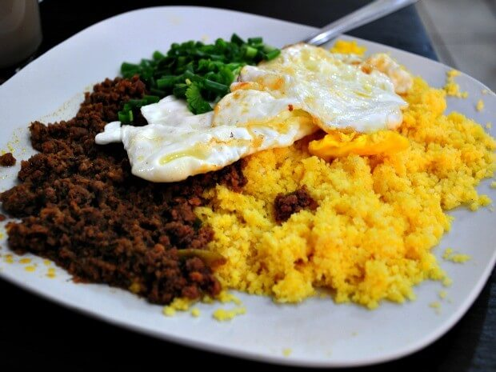

- 500 g de cuscuz
- 1 kg de carne moída
- 2 cebola médias
- 4 tomates
- 1 maço de coentro
- 1 maço de cebolinha
- 1 pimenta de cheiro
- 4 dentes de alho
- 5 ovos
Baixaria
Sobre o 'batismo' do prato, existem muitas histórias, cada uma com uma versão diferente. De acordo com o jornalista Alexandre Nunes, o nome surgiu para separar uma briga depois que dois jornalistas debocharam de um grupo de pessoas que chegava de uma festa para tomar café no mercado. "Eles já estavam 'alterados' pela bebida, quando chegou umas senhoras de vestido longo e uns homens de fraque e gritaram: 'lá vem a baixaria', então para não virar uma confusão a Toinha disse que baixaria era o prato que eles pediram"
-
O primeiro passo é hidratar e temperar o cuscuz com a água, 8 copos americanos de água, e meia colher de café de sal. Deixe hidratar por uns 10 minutos. Coloque o cuscuz em uma cuscuzeira, aperte com os dedos e coloque para cozinhar em fogo médio por 15 minutos. Caso você não tenha uma cuscuzeira, estenda um pano de prato limpo, coloque o cuscuz hidratado no centro, coloque a tampa de uma panela, e amarre como se fosse uma trouxinha, coloque a tampa na panela com 1 dedo de água e cozinhe em fogo médio.
-
Enquanto o nosso cuscuz cozinha, vamos cortar nossos legumes. Corte a cebola em cubos pequenos e o tomate também, pique o alho e a pimenta bem picadinhos, corte a cebolinha e o coentro bem fininhos.
-
Agora tempere sua carne moída com sal e pimenta, em uma panela aquecida, refogue a carne com um pouco de óleo, quando a a carne da estiver quase cozida, coloque metade da cebola (deixe a outra metade para o vinagrete) e logo em seguida o alho e a pimenta, quando a carne estiver pronta, coloque a cebolinha picada.
-
Para o vinagrete, junte a cebola, o tomate e o coentro e tempere com sal e limão.
-
Frite os ovos na manteiga. Todos os nossos preparos estão prontos agora é só juntar todo mundo e comer!
Modo de Preparo